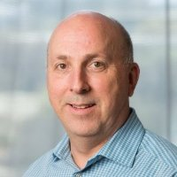

Sir Terence Hedley Matthews KBE,
FREng,FIEE (born 6 June 1943), is a Welsh-Canadian business magnate, serial
high-tech entrepreneur, and Wales' first billionaire.
He has founded or funded
over 100 companies in the high tech communications field, most notably Mitel and
Newbridge Networks. He is the chairman of Mitel, Wesley Clover, and the Swansea
Bay City Region board. He owns the Celtic Manor Resort, KRP Properties, the
Brookstreet Hotel, and the Marshes Golf Club.
Matthews was born in
Newport, South Wales, at the then Lydia Beynon Maternity Hospital. Matthews
returned as an adult to include the manor house that housed the hospital within
the Celtic Manor Resort. He grew up in the town of Newbridge, Caerphilly. He
studied at Swansea University and received a bachelor's degree in electronics in
1969.
Matthews' first enterprise
was started in collaboration with fellow Briton and Microsystems employee
Michael Cowpland in 1972. To raise seed money for future enterprises they had
planned, the pair intended to import and sell electric lawnmowers built in the
UK. Conventionally and as well accounts by Terry Matthews the name Mitel is
thought to be a contraction of "Mike and Terry's Lawnmowers". However Cowpland
is quoted as saying that it stands for "Mike and Terry ELectronics". This first
endeavour was a fiasco; the shipping company carrying the first batch lost the
container. When the lawnmowers finally arrived, the ground was covered with snow
in the Canadian winter and no one would buy them. Matthews later said "That
taught me a key lesson — the importance of timing. The shipping company lost the
lawnmowers! By the time they showed up no-one wanted them, as you can't cut
grass when it's covered with snow."
Mitel became a technology
consultancy company run from home to the various companies around Ottawa's
emerging high-tech district. Mitel's clients included the National Research
Council, the Communications Research Centre, and a handful of pioneering
start-ups including SHL Systemhouse which was later purchased by EDS and now is
part of HP and Quasar Systems (now Cognos).
Obtaining funding from a
$4,000 bank loan and as well from their own savings and a group of angel
investors (notably Kent Plumley) the two developed a telephony DTMF tone
receiver based on Cowpland's Ph.D. thesis. This was a major advance in the
technology since they were able to sell receivers at a fraction of the cost of
competing versions, while gaining returns of 1000%. Additionally, Mitel later
became a chip manufacturer with the acquisition of the Silek foundry in Bromont,
Quebec.
Later the pair realized that
the then new technology of microprocessors and other semiconductor devices would
make a similar change in the market for small PBXs. The SX200 PBX launched to
immense success, being cheaper to purchase, quicker to install and far more
functional. Mitel became one of the more successful manufacturers of small PBX
systems and telecom semiconductors in the world, floating on the New York Stock
Exchange in 1981.
In 1985, British Telecom
bought a controlling interest in Mitel. Cowpland would later form the company
that became Corel and Matthews later founded Newbridge Networks.
In 1986, Matthews drove Newbridge to become a leader in the worldwide data networking industry, manufacturing data communications products, especially ATM devices and routers. In 2000 the company employed more than 6,500 employees with recorded FY 1999 revenue of $1.8 billion. Later in 2000, Newbridge was acquired by Alcatel for $7.1 billion. Matthews' personal stake in Newbridge was valued at over a billion dollars, and as a result of the transaction he became the largest single shareholder in Alcatel.